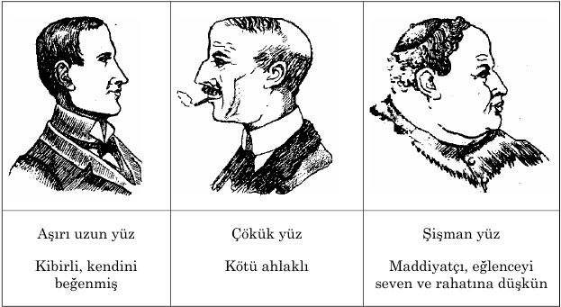

Ara ş t ı rma Serisi No.13
¯¯¯¯¯¯¯¯¯¯¯¯¯¯¯¯¯¯¯¯¯¯¯¯¯¯¯¯¯¯¯¯¯¯
45
Yüz Okuma Sanat ı
¯¯¯¯¯¯¯¯¯¯¯¯¯¯¯¯¯¯¯¯¯¯¯¯¯¯¯¯¯¯¯¯¯¯
Belirgin çizgilerle ayr ı lm ı ş ve geli ş mi ş çene yap ı s ı ki ş inin irade gücünün, enerjik olmas ı n ı n bir simgesidir. Dar ve zay ı f geli ş mi ş çene yap ı s ı na sahip ki ş ilerin i ş alan ı nda verimsiz oldu ğ una ve karar verme gücünün zay ı f oldu ğ una i ş arettir. Kal ı n, etli ve belirgin dudaklar zevkli, e ğ lenceyi seven ve ayr ı ca güvenilir ki ş ilerin bir özelli ğ idir. Dar, çok ince dudakl ı ki ş ilerin ise kapal ı , bazen da güvenilemez bir karaktere sahip oldu ğ una i ş arettir.
Ki ş inin karakter özelliklerinin belirlenmesinde kulaklar yüz yap ı s ı nda di ğ er organlara oranla daha büyük önem ta ş ı maktad ı r. Kulaklar, ki ş inin beden organlar ı nda do ğ u ş tan ölümüne dek ş ekil de ğ i ş tirmeyen tek beden uzvu say ı labilir. Yeni do ğ mu ş bebeklerde art ı k kula ğ ı n ş ekli tam ve belirgin bir nitelik ta ş ı yor. Oysa, burun, a ğ ı z, gözler ve ayaklar ı n yap ı s ı nda zaman geçtikçe ş ekil de ğ i ş ikli ğ i olabiliyor. Bir Frans ı z antropologu, ki ş inin kulak yap ı s ı n ı n di ğ er organlara oranla daha büyük önem ta ş ı d ı ğ ı na i ş aretle, "kulaklar, ki ş iye yolcu ğ u için yarat ı l ı ş tan verilmi ş bir pasaport ve mühürdür" demektedir. Bayanlara oranla erkeklerin fizyognomik incelenmesi daha kolayd ı r.
B. Resimler
__________________________________________________________________
© WWW.MAXIMUMBILGI.COM
